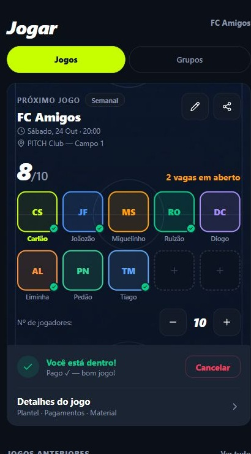
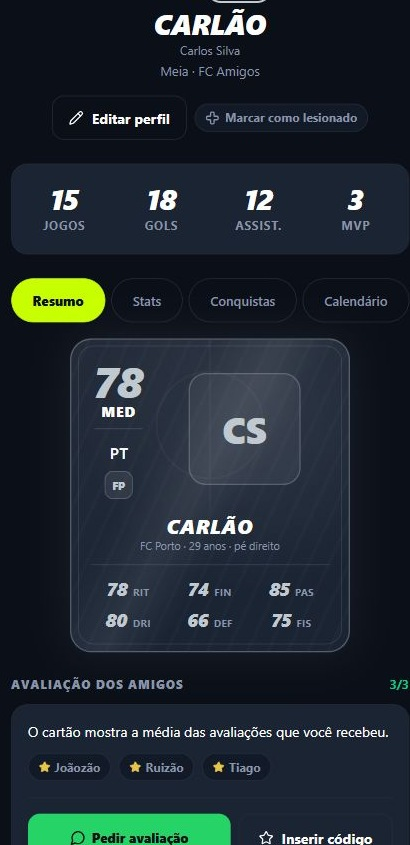

PITCH MANAGER
A resenha vira Fantasy.
Monte seu elenco com os jogadores do grupo. Escolha capitão, acompanhe a pontuação e dispute a classificação com a galera.
PITCH / FUTEBOL AMADOR
Organize seu jogo. Leve seu time a campo. Acompanhe a liga. Dê uma história ao seu futebol.


Escolha seu perfil e veja o que muda na prática.
Nome, elenco, posições e desempenho reunidos na página da equipe.
Ver por dentro ↗02Diferencie partidas homologadas, provisórias e em revisão.
Ver por dentro ↗03Posição, overall e atributos em um cartão com a sua identidade.
Ver por dentro ↗04Data, horário e campo no mesmo painel do próximo jogo.
Ver por dentro ↗01 / ELENCO E COMPETIÇÃO
Uma identidade para o elenco. Um lugar para acompanhar partidas, resultados e quem faz a diferença em campo.
Nome, elenco, posições e desempenho reunidos na página da equipe.
Próximos confrontos e resultados com o estado de validação visível.
Artilheiros, assistências e cartões dos atletas no contexto da competição.
PITCH Rivals conecta o elenco aos desafios entre times, à convocação e ao resultado confirmado pelos dois capitães. Disponível em piloto.
Conhecer o Rivals ↗02 / COMPETIÇÃO · PILOTO
Tabela, calendário e atletas em uma experiência compartilhada por gestão, capitães, jogadores e torcida.
Diferencie partidas homologadas, provisórias e em revisão.
Acompanhe a tabela baseada nos jogos homologados, com consulta aos provisórios.
Rankings de gols e assistências conectados aos registros das partidas.
PITCH Ligas em piloto: uma experiência para a gestão da competição, os times, os atletas e a torcida.
Conhecer o piloto de ligas ↗03 / SEU PITCH ID
Seu futebol ganha um perfil: jogos, gols, assistências, MVPs e um cartão com a avaliação dos amigos.
Posição, overall e atributos em um cartão com a sua identidade.
Partidas, gols, assistências e MVPs reunidos no perfil.
Forma recente, recordes e conquistas dão continuidade a cada partida.
Recebeu um convite? Entre no grupo e confirme sua presença. Sem grupo ainda? Crie seu PITCH ID e registre interesse em jogos na sua região.
Criar meu PITCH ID ↗04 / O JOGO DA SEMANA
Marque a partida, compartilhe o convite e acompanhe as confirmações. A rotina do grupo fica mais fácil de conduzir.
Data, horário e campo no mesmo painel do próximo jogo.
Veja quem confirmou e quantas vagas ainda faltam preencher.
Acesse elenco, registro de pagamentos e material nos detalhes do jogo.
O grupo pode sortear times diferentes a cada rodada. Time permanente tem elenco e identidade próprios. Uma conta pode participar dos dois.
Criar meu grupo ↗NO CENTRO DE TUDO / A PARTIDA
ANTES DO JOGO: data, campo e horário definidos. O convite leva o grupo às confirmações e à grade de vagas.
No Matchday, gols, assistências e defesas viram registros da partida. Depois, resultados, MVP e rankings prolongam a experiência.
DEPOIS DO APITO / TEM MAIS JOGO
PITCH MANAGER
Monte seu elenco com os jogadores do grupo. Escolha capitão, acompanhe a pontuação e dispute a classificação com a galera.
PITCH VAR
Um celular registra a partida. O fluxo do VAR permite rever os lances dos gols. O organizador escolhe quando usar.
Celular posicionado para acompanhar o jogo.
O lance ganha contexto no Matchday.
Recupere o lance pelo fluxo disponível do VAR.
SEU PRÓXIMO JOGO
Comece pelo seu grupo, seu time ou seu PITCH ID.
Para ligas, conheça a experiência em piloto.